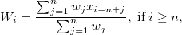
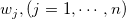

/math-7b8b965ad4bca0e41ab51de7b31363a1.png "n") is the length of vector vw.
is the length of vector vw.This function is for calculating weighted moving averages. At point = i, the weighted moving average value is:
 where  is the weighted value and is the length of vector vw.
dataset wmovavg(dataset vd, dataset vw)
vd
vw
Return the weighted moving average vector.
// Col(3) will be filled with weighted moving average value at each point, //with stating point = 10. for(ii=1;ii<=30;ii++) col(1)[ii] = ii; //data vector for(ii=1;ii<=10;ii++) col(2)[ii] = ii/10; //weight vector col(3)=wmovavg(col(1),col(2));